Do campo direto
para sua mesa
Bem-vindo ao Mercado de Agricultura Familiar, um espaço que valoriza a produção local e conecta o campo à cidade, oferecendo alimentos frescos, saudáveis e cultivados com dedicação. Cada produto carrega cuidado, qualidade e respeito à natureza, fortalecendo a economia local e aproximando você da origem dos alimentos.
Horário de funcionamento
Segunda-feira: 08:00 às 16:00
Terça-feira: 08:00 às 16:00
Quarta-feira: 08:00 às 16:00
Quinta-feira: 08:00 às 16:00
Sexta-feira: 08:00 às 16:00
Sábado: 08:00 às 12:00
Domingo: Fechado
Produtos
Conheça alguns dos produtos que podem ser encontrados no mercado.
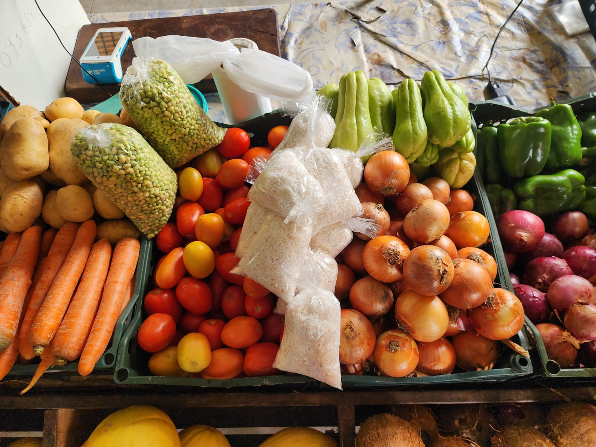
Verduras frescas
Verduras colhidas diariamente, garantindo frescor, qualidade e sabor para uma alimentação mais saudável e natural.
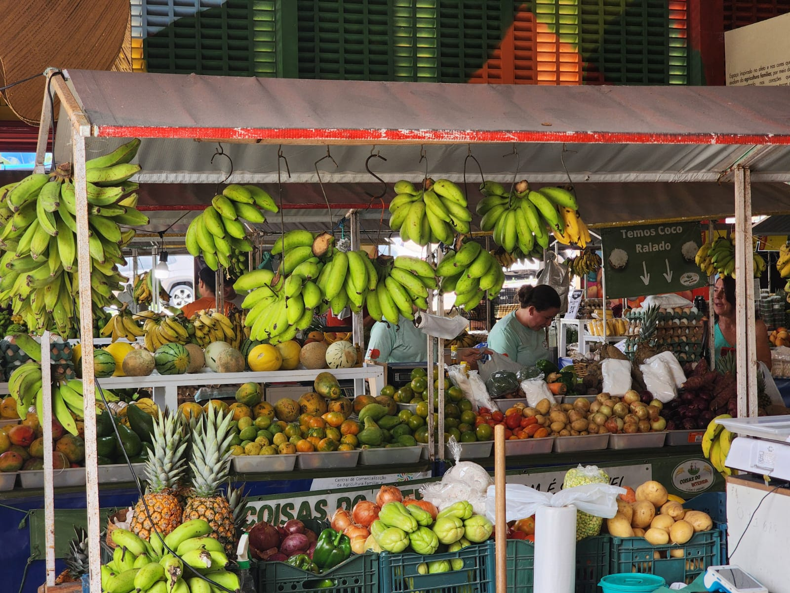
Frutas regionais
Frutas típicas da região, produzidas com cuidado pelos agricultores locais, ricas em sabor e nutrientes.
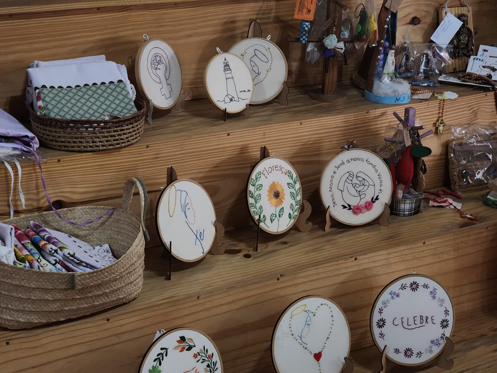
Artesanatos
Peças artesanais feitas à mão, que valorizam a cultura local e trazem criatividade, tradição e identidade para o seu dia a dia.
Alguns dos nossos parceiros
Conheça as pessoas e negócios que fazem parte do Mercado de Agricultura Familiar, levando produtos frescos, qualidade e tradição até você.
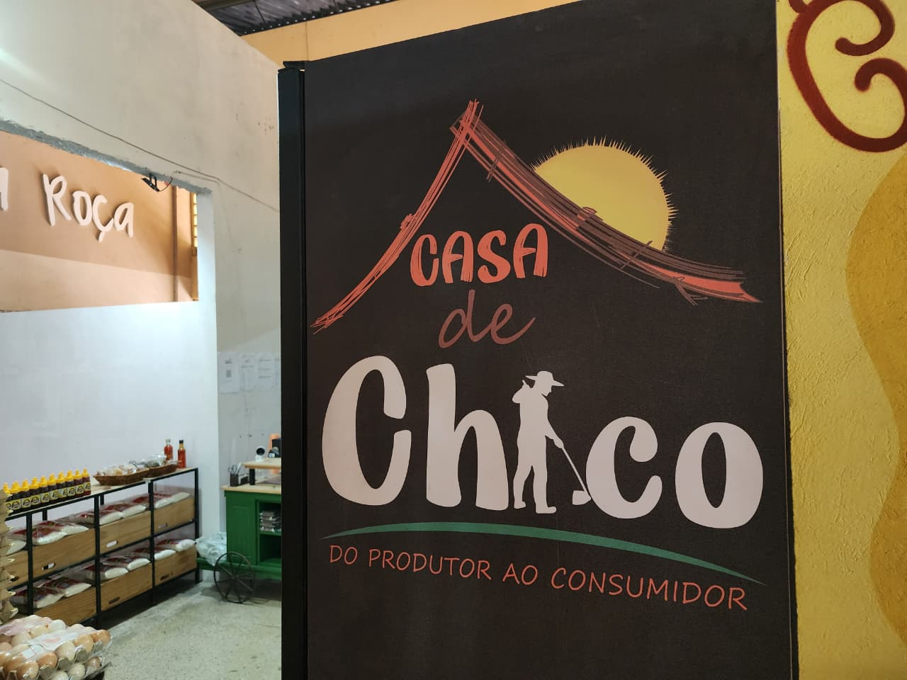
Casa de Chico
Espaço tradicional que reúne produtos artesanais, valorizando a cultura local e o trabalho dos pequenos produtores.
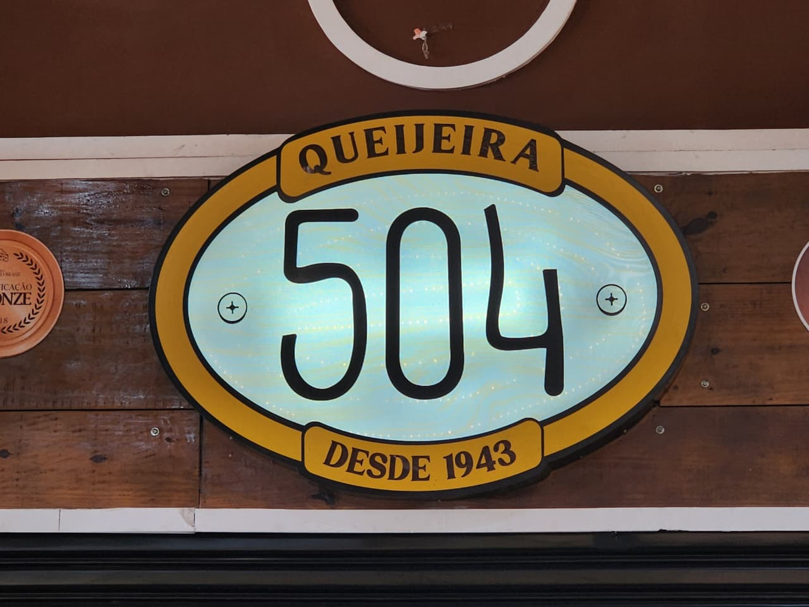
Queijeira 504
Referência em produção artesanal de queijos, com tradição, qualidade e respeito às práticas da agricultura familiar.
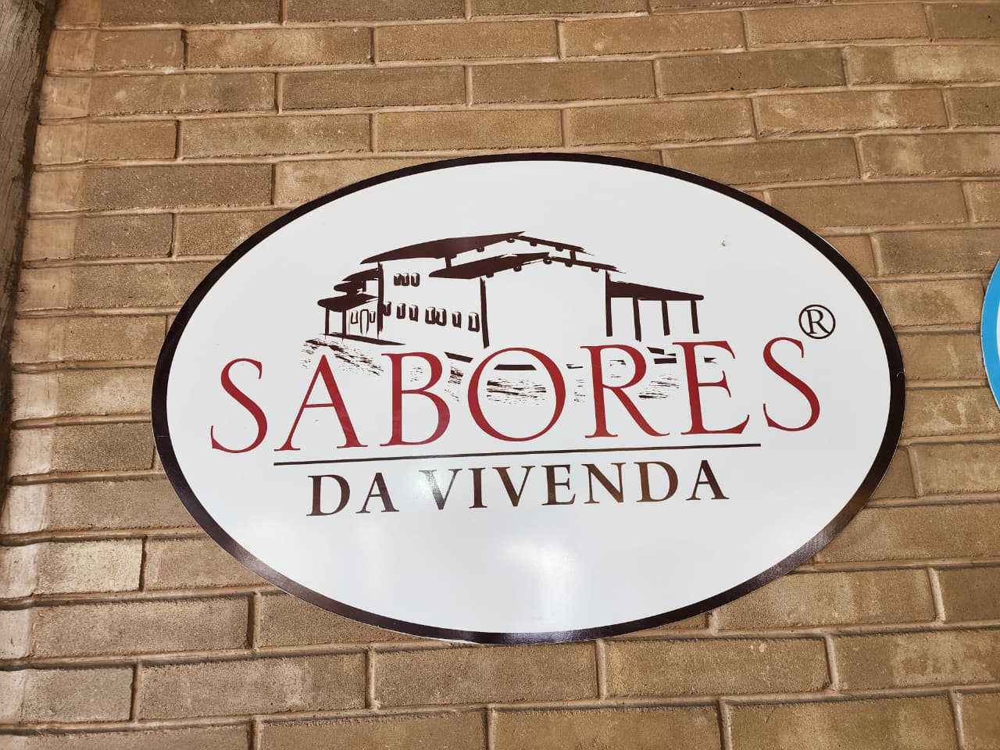
Sabores da vivenda
Produção caseira com foco em alimentos naturais e saborosos, fortalecendo a economia local e o consumo consciente.
Sobre o mercado
O Mercado de Agricultura Familiar é um ambiente agradável, bem ventilado e acolhedor, pensado para oferecer conforto a todos que visitam o espaço. No local, é possível encontrar uma grande variedade de produtos frescos, como frutas, verduras e legumes cultivados com cuidado, preservando o sabor e a qualidade dos alimentos. Além disso, o mercado também reúne diversos produtos artesanais, que valorizam a cultura local e o trabalho manual, trazendo mais identidade e tradição para cada item disponível.
Com fácil localização, o mercado se torna um ponto acessível para quem deseja conhecer e aproveitar tudo o que ele oferece. É um espaço que fortalece a economia local, incentiva o consumo consciente e aproxima as pessoas da origem dos alimentos. Seu funcionamento acontece de segunda a sábado, proporcionando mais comodidade para visitantes e clientes. Mais do que um local de compras, é um ambiente que une qualidade, diversidade e conexão com o campo em um só lugar.
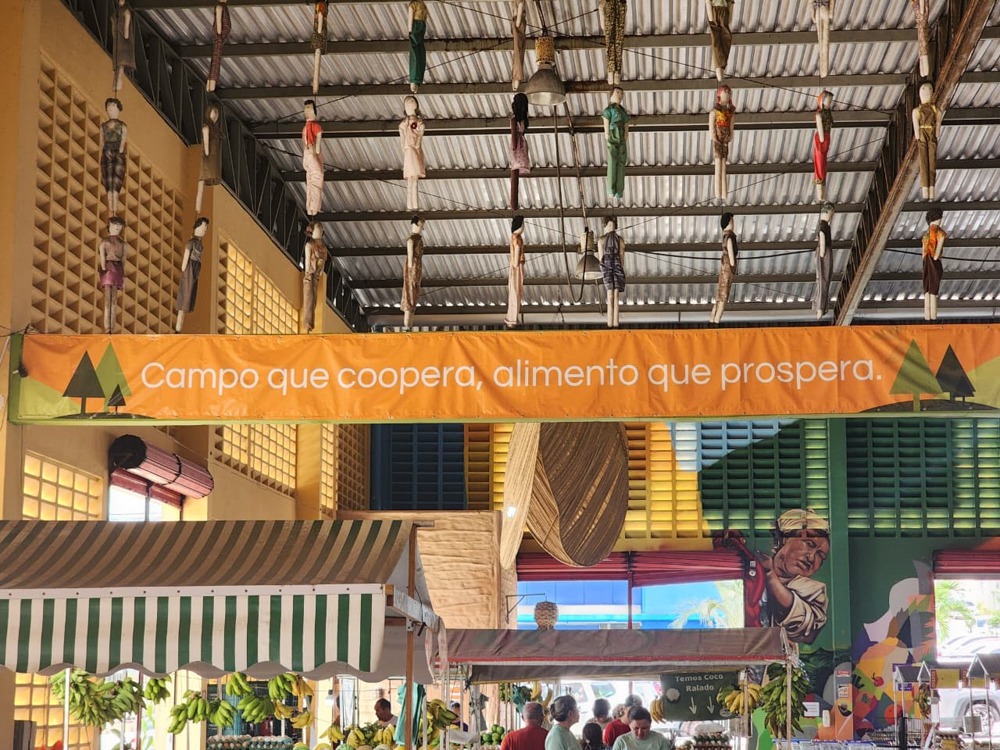
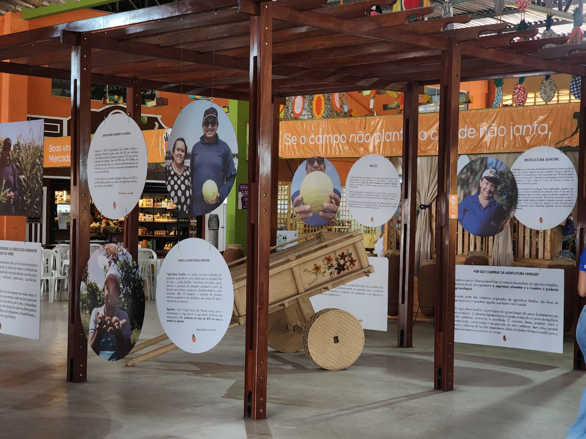
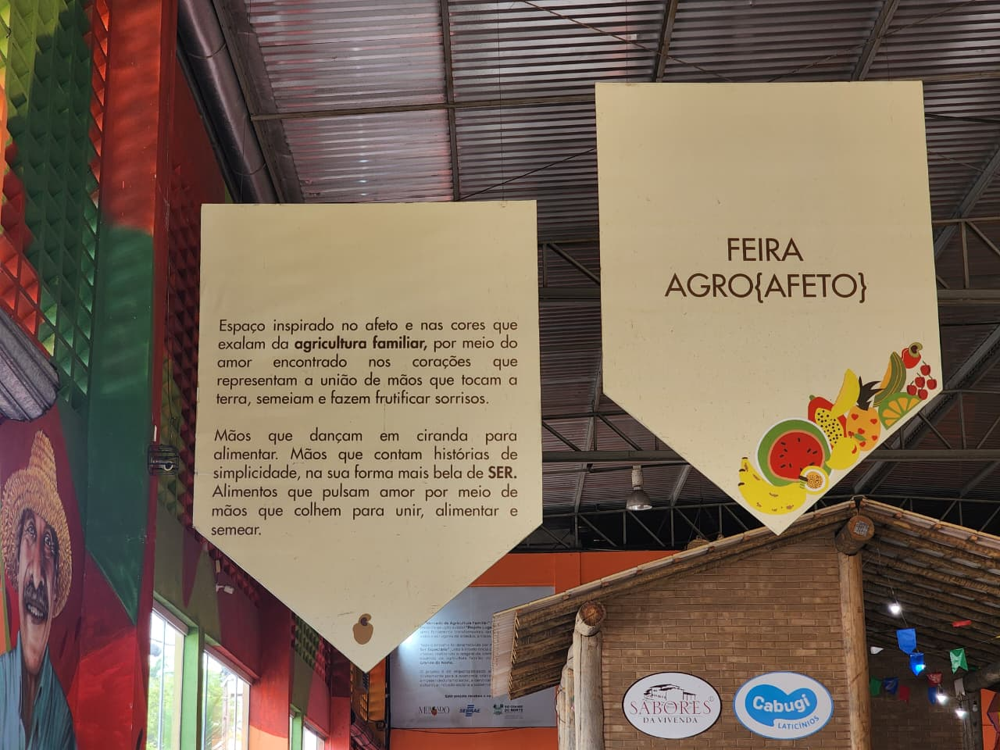
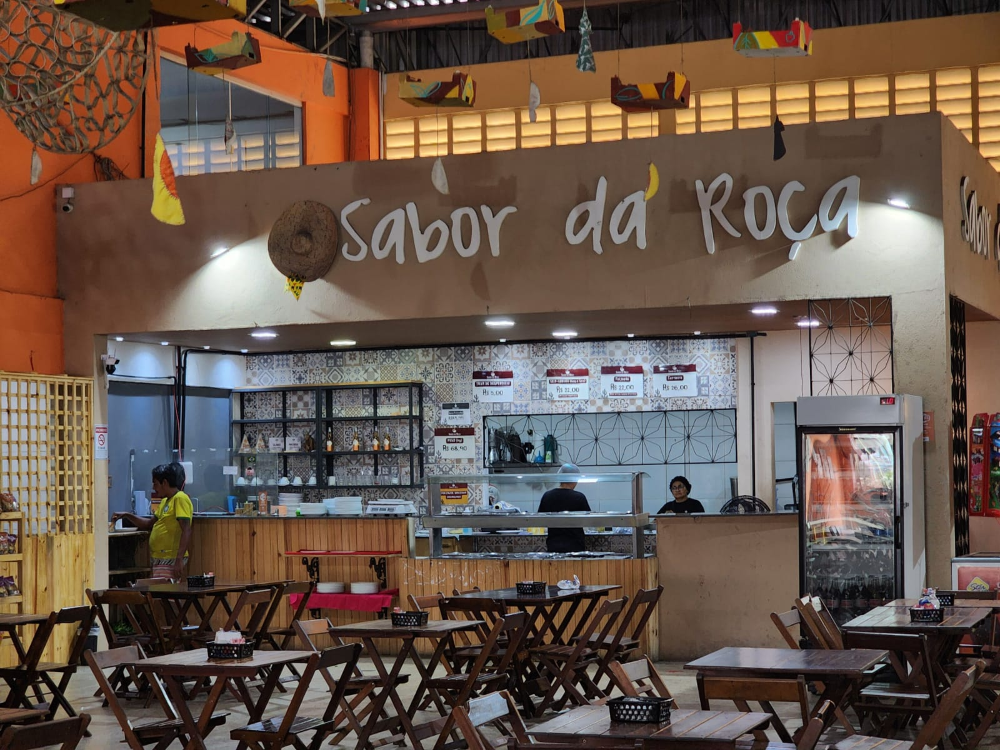
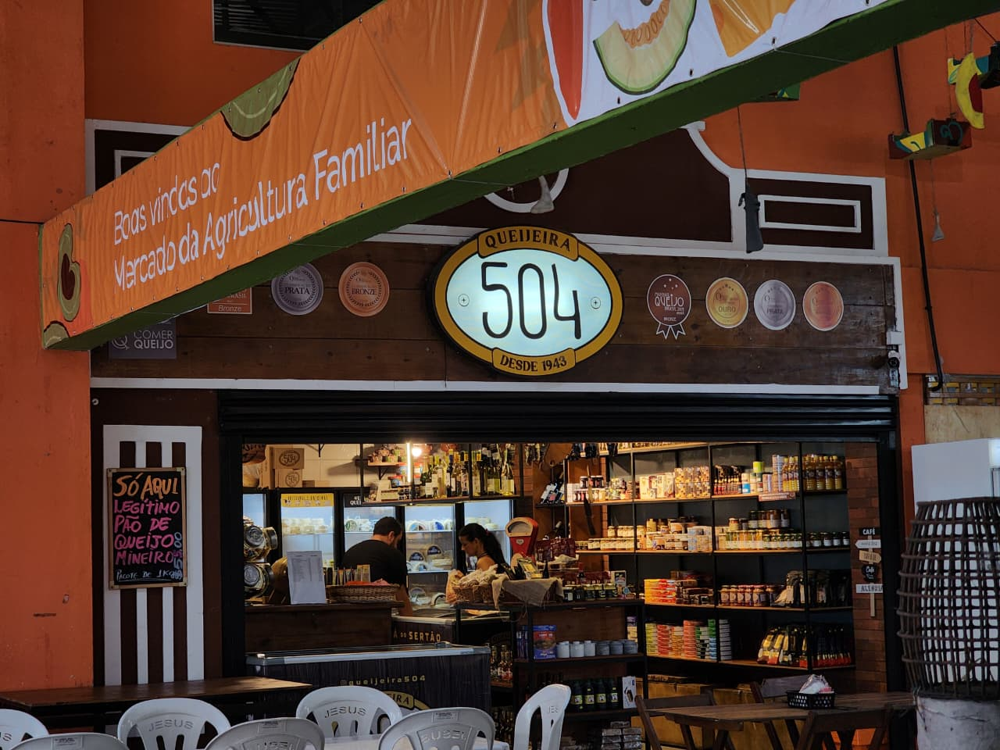
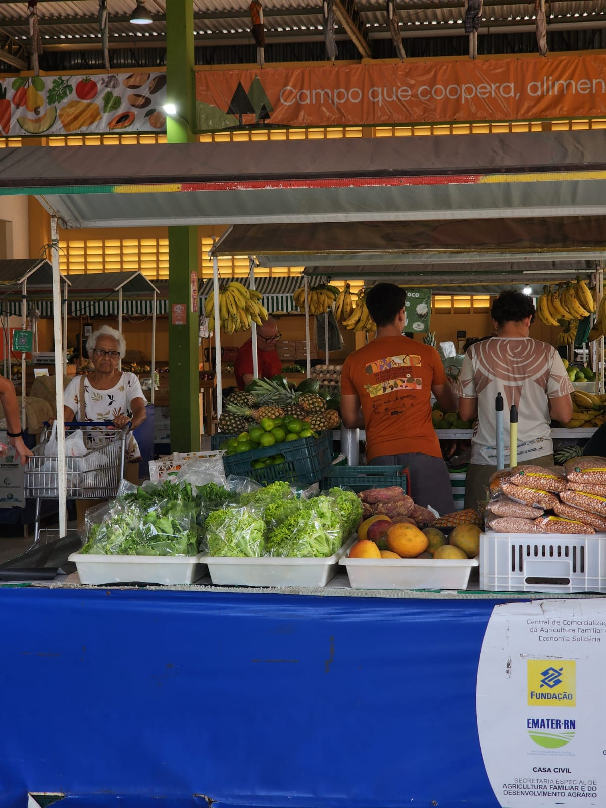
Localização
Veja onde o Mercado de Agricultura Familiar está localizado em Natal/RN.
Informações do local
Cidade: Natal/RN
Tipo: Federação de cooperativas da agricultura familiar e economia solidaria do Rio Grande do Norte
Contatos: (84) 9 9844-5810
Endereço: R. Jaguarari, 2454 - Lagoa Nova, Natal - RN, 59062-500
Referência: Adicione aqui um ponto de referência, se quiser.